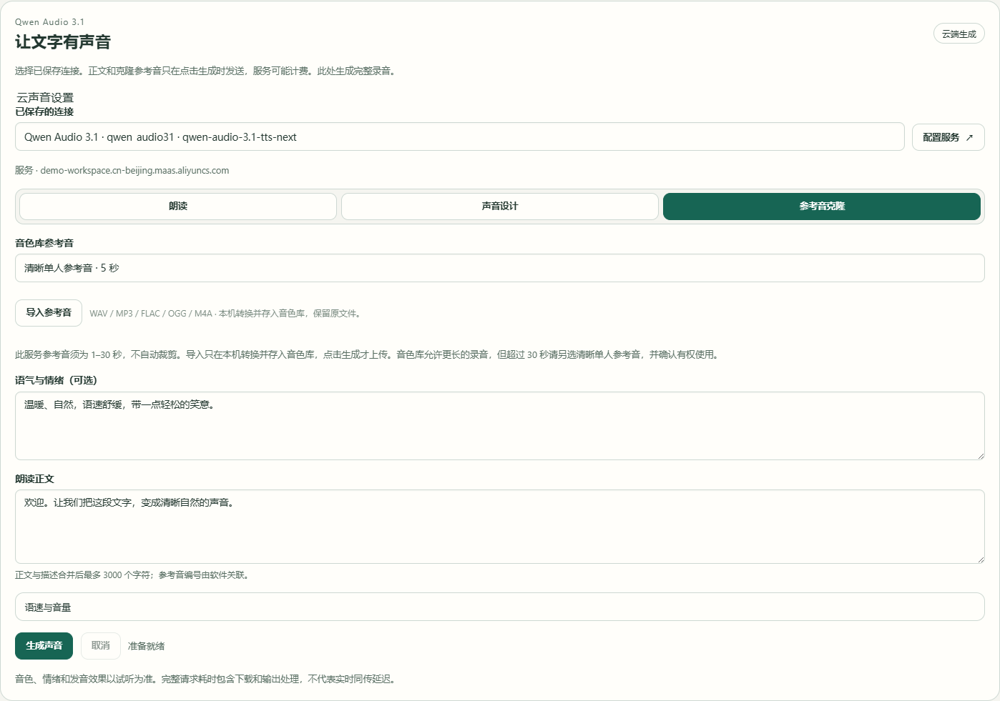
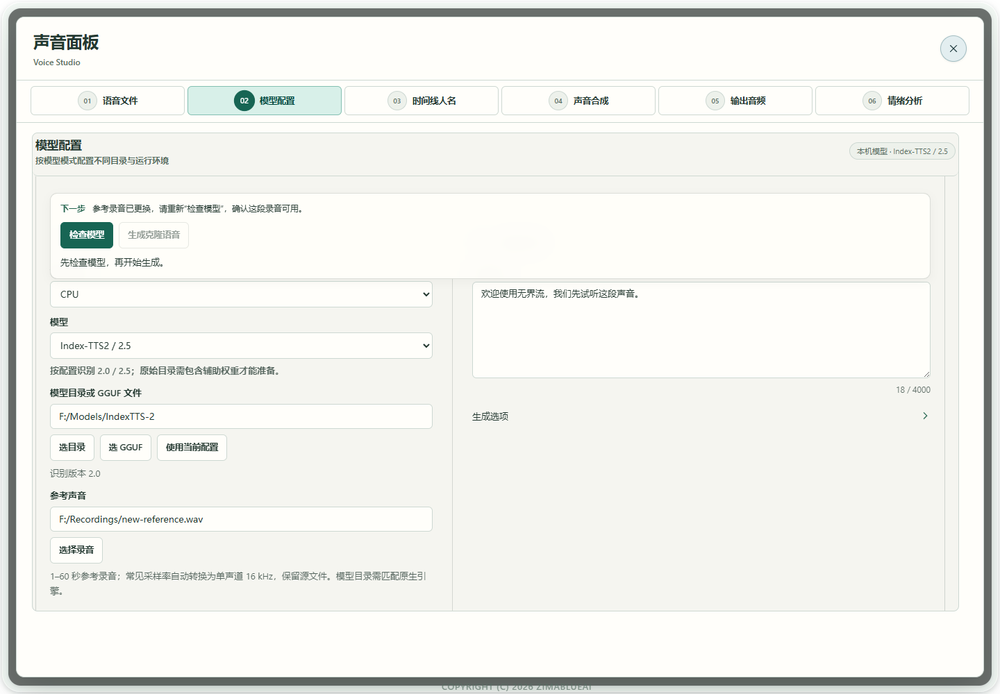

场景教程
用参考录音克隆声音
先检查模型和参考音，再生成一句目标文字试听。
你能得到什么
保留原录音，生成新内容，并把满意的声音保存为可复用参考。
开始前准备
- 使用清晰单人参考录音。多数原生入口要求1–60秒，建议3–10秒；FireRed须1–10.24秒，建议3–5秒。Qwen Base、FireRed等需填写录音实际原文。
- 选择与任务匹配的 Index-TTS2／2.5、VoxCPM2、Qwen3-TTS Base 原生包，FireRed Instruct原始完整目录，或已运行的兼容克隆服务。各模型不能混用文件。
- 本机 CPU 可能较慢；使用 NVIDIA GPU 时需配套 CUDA 组件。具体能否运行以检查和实际短试音为准，不按模型名字假定显存足够。
使用 Qwen 云端克隆
不想在本机加载声音模型时，可以使用 Qwen Audio 3.1。需要可访问此模型的云端账户；正文和参考音会在点击「生成声音」时发送，服务可能计费。此入口生成完整录音，当前只支持一个参考音。
- 01
在配置引导保存连接
打开「配置引导页」的 API 服务步骤，搜索 Qwen Audio 3.1。启用服务，填入你的 WorkspaceId 对应的 HTTPS 根地址及 API Key。在语音合成模型项填写
qwen-audio-3.1-tts-next，保存配置。根地址格式为https://{WorkspaceId}.cn-beijing.maas.aliyuncs.com；请用账户中的实际 WorkspaceId 替换括号部分，不附加接口路径、端口或/v1。语音识别模型项与合成模型项独立，保留原有识别配置即可。
真实软件界面；工作区与参考音为示例，未调用云服务。点击放大。 - 1填账户中的实际 WorkspaceId 根地址，不附加接口路径。
- 2填写自己的 API Key；图中仅为本地示例。
- 3在 TTS 合成模型项填 qwen-audio-3.1-tts-next；ASR 识别项独立保留。
- 02
在声音面板选连接与参考音
打开「语音工具 → 模型配置 → 云端 API」，服务商选择 Qwen Audio 3.1，再在「已保存的连接」中选择刚才的连接。点击「参考音克隆」，从音色库选择未归档的参考音；没有参考音时点击「导入参考音」。导入会在本机转换并保存，保留原文件，这一步不上传到云端。
本接口要求 1–30 秒的清晰单人录音，建议先选 3–10 秒。音色库可保存更长录音，但超过 30 秒不能用于此入口，请换一段合格录音；软件不会自动裁剪。请确认有权使用这段声音。

真实软件界面；工作区与参考音为示例，未调用云服务。点击放大。 - 1选择已保存的连接，再选「参考音克隆」。
- 2选择未归档的 1–30 秒单人参考音。
- 3导入只在本机转换并存入音色库，此时不上传。
- 4语气与情绪可留空；需要时写普通文字描述。
- 5写希望生成的新正文，不写 @voice 编号。
- 6点击生成才发送正文和参考音，完成后试听与下载。
- 03
填写新正文，可选调整表达
「朗读正文」填写希望生成的新内容；「语气与情绪」可以留空，或写「平静、自然，语速舒缓」。正文和描述合并后最多 3000 个字符，只用普通文字和换行，不填
@voice1等编号。软件会关联所选参考音。需要时展开「语速与音量」，调整后先用一句短文本试音。 - 04
生成、试听，再下载
点击「生成声音」后才发送正文和参考音。完成后用播放器核对音色、发音与情绪，点击「下载 WAV」保存，或保留到 A/B 进行对比。生成中点击「取消」后等待任务收尾，再切换连接或参考音。这里只生成完整录音，不接入持续实时同传，也不会创建可直接复用的供应商音色编号。

Qwen 云声音：这段音频是哪个连接生成的？
此处的来源标注将在下次更新提供，当前 Windows r475 安装包尚未包含这项改进。
打开语音工具 → 模型配置 → 云端 API → Qwen Audio 3.1 · TTS，选择在配置引导中保存的连接。上方显示的服务用于下一次生成；生成后，结果区的这段音频的来源显示本段声音生成时使用的连接、服务域名和模型。
已保存的连接改变后，已有结果可能显示来自此前配置。这段声音仍来自结果区标明的原配置，可以继续试听、下载 WAV，或保留至 A/B；每条对比音频保留各自来源。重新生成时，使用当前保存的连接。

- 1上方连接用于下一次生成，不会改写旧音频的来源。
- 2结果保留生成时的服务与模型；出现「来自此前配置」时，仍以这里为准。
- 3可继续试听、下载这段音频；修改配置或重载界面前，先下载需要保留的声音。
较早版本的试听与 A/B 仅保留在当前界面会话，重新加载前需要下载。支持下节恢复流程的更新可在本窗口重载后找回已完成暂存的音频；需要长期保留的声音仍请下载。
如果提示服务、认证信息不可用，或连接已经更改，请回配置引导检查并重新保存，再选择连接。取消生成后，等待收尾完成再切换服务。音色与表达效果需要试听判断；请求成功不代表克隆准确率或实时同传延时已经达标。
完成配置引导后，继续试听
本节流程需要 r480 或更新的 Windows 候选安装版；r475 安装包不含本节改进。
- Qwen Audio 3.1 试音成功后，等待本地暂存完成。要做对比，可把生成结果保留至 A 或 B；共享 A/B 支持本机模型、模型服务和云端结果，也保留 MP3。试听暂存尚未写完时，配置引导不会重载界面。
- 在同一个应用窗口中完成并保存配置引导。界面重新加载后，打开「语音工具」；进入对应工作台时，找回最近暂存的 Qwen 试听和 A/B 音频，无需在软件启动时加载音频。
- 先核对恢复音频的原来源。修改连接或停用提供商，不会把旧音频改归新来源，也不会恢复已停用的提供商。来源标注记录原请求，不表示当前 API Key 仍有效；再次生成仍须选择当前可用的已保存连接。
- 点击播放才会试听。恢复不会自动播放、请求提供商或上传参考录音。可以继续试听、下载原来的声音，再选择其他连接生成下一段。

- 1当前保存的服务用于下一次生成，可能与找回音频的原来源不同。
- 2「从本机恢复」与「来自此前配置」描述的是这段旧音频；来源记录不表示当前认证信息仍有效。
- 3点击播放才试听；也可下载 WAV 或保留至 A／B。恢复本身不会执行这些操作。
暂存范围与长期保留
需要保留的声音请下载。这项缓存用于当前窗口的界面重载衔接，不提供永久保存或关机重启后恢复。浏览器禁用存储、手动清理数据、过期或容量清理，都可能使音频无法恢复。若看到本地暂存失败提示，当前音频仍可试听、下载；请先下载，再重载或关闭界面。
| 暂存内容 | 上限 |
|---|---|
| 最近一次 Qwen 试听 | 8 MiB，一段音频 |
| 共享 A/B | 每槽 32 MiB，保留原 Blob 与格式，包括 MP3 |
| 所有窗口合计 | 96 MiB 音频，最多 12 条记录 |
| 过期与清理 | 12 小时过期；下一次写入缓存时清理过期记录，容量不足时按最早记录淘汰。 |
本机暂存保留什么？
IndexedDB 保存音频 Blob、SHA-256 完整性校验值和选定的生成元数据，不保存认证凭据或带签名的服务地址。Session Storage 只保存随机窗口 UUID 与各槽版本标记，不包含文本、音频或凭据。这里的清理只针对浏览器试听暂存，不表示其他原生合成输出文件已被清理。
使用本机模型与其他服务
- 01
选择本机模型与完整目录
先在「配置引导页 → 模型库」保存模型目录、规格或量化及需要的 Runtime。打开「语音工具 → 模型配置 → 本机模型」，在已保存模型中选择该配置，再选择计算设备。使用页面无需重新填写路径。Qwen 克隆选择 Base；CosyVoice／Fish 的本机入口需要完整 audio.cpp GGUF 包，其真实原生生成仍待验证。

真实软件界面 · 点击放大；图中示例数据不代表你的结果 - 1检查和生成固定在编辑区上方。
- 2文件检查通过后仍需实际试听。
- 02
原始 Index 权重先「准备原生模型」
选择 Index 原始目录后点击「检查模型」。出现待准备提示时点击「准备原生模型」，等待自动切换到模型目录内的 .boundless-flow/native 后再检查。保留原文件；该固定位置复用，新增转换文件及关联仍需要源盘空间，不会失败后转存 C 盘。Vox 缺少 audiovae.safetensors 时也须完成对应准备。 原始目录是你选择的模型根目录；准备后的目录是该根目录内的 .boundless-flow/native。已经准备好时直接选择这个 native 目录并检查，不再对它做一轮转换。试音成功后，在配置引导中保存并选好已准备的模型配置；同传工作台选择同一个已保存模型，再选择参考音和填写实际原文，不需再次粘贴路径。不要把兼容TTS目录当作原生模型目录。

真实软件界面 · 点击放大；图中示例数据不代表你的结果 - 1下一步根据检查结果提示。
- 2按需转换原始权重，保留原文件。
- 03
导入并使用参考录音
展开「导入参考录音」，点击「选择音频」，填写便于查找的名称及需要的录音原文，点击「导入并使用」。支持的录音会派生单声道 16 kHz WAV，保留原文件。参考原文只写录音中实际说的话，不写下一步要合成的文本。

真实软件界面 · 点击放大；图中示例数据不代表你的结果 - 1选择要导入的原始录音。
- 2为录音填写便于查找的名称。
- 3点击导入，原录音会保留。
- 04
检查当前参考，可选加载，再生成
参考录音与需要的原文填好后，在编辑区上方固定操作区再次点「检查模型」。换参考音后，已有模型文件检查可保留，但新录音必须重新检查；先按「下一步」提示处理，不能沿用旧参考结果。填写短「合成文本」，检查通过后直接点击「生成克隆语音」。Index／VoxCPM可在模型列下方选「提前加载模型」；它只加载权重，首句仍需处理参考音。FireRed若配套组件支持、已选合格参考音并检查，会显示「预置模型与参考音 / Prepare model and reference」，可一并预处理参考与解码前缀；无参考或旧组件仅提前加载。两者都不生成声音，也不等于实际推理预热；仍须生成短句并试听。生成中看同一操作区的状态或点「取消任务」，完成后试听再保存。
真实软件界面 · 点击放大；图中示例数据不代表你的结果 - 1检查和生成固定在编辑区上方。
- 2文件检查通过后仍需实际试听。
- 05
换参考音，先重新检查
要换一个人的录音或音色库版本时，选择后看上方「下一步」。模型文件的检查结果可能保留，但新参考音未检查前不能直接生成或提前加载。再次点击「检查模型」，处理录音格式、时长或原文提示，再生成。不要因为先前一次试听成功，就把新录音当作已经通过。

真实软件界面 · 点击放大；图中示例数据不代表你的结果 - 1换参考录音后需要重新检查。
- 2检查当前录音，才可生成。
- 06
使用服务或 FireRed 时走对应入口
已运行的 CosyVoice／Fish 服务先在配置引导保存实际连接，在「模型服务」选择已保存服务，再选择参考音和填写所需原文。默认地址只是示例。FireRed Instruct 先在配置引导保存原始根目录，在本机入口选择该模型配置和 CPU（当前 Windows 包不提供 FireRed CUDA 组件），参考音须1–10.24秒，建议3–5秒并填写原文，检查后离线试音。满意后按同传教程配置实验性生成中播放；持续实时性能尚未验收。此入口没有 FireRed 声音设计或独立情绪控制。 导入或换选参考音后，填写这段录音的实际原文并重新「检查模型」，再用一句目标语言短文本试音。试听满意后再配置持续同传；参考音换人、换片段或参数变化后，旧试音不能代替新一轮检查与生成。
旧截图用于说明控件位置，图中的 CUDA 是较早参数；当前 Windows 安装包使用 FireRed 时请选择 CPU。需要 NVIDIA GPU 时，请选择已支持的 Index-TTS2、Qwen3-TTS 或 VoxCPM2，并先通过组件与设备检查。

真实软件界面 · 点击放大；图中示例数据不代表你的结果 - 1选择 FireRed Instruct 离线试音。
- 2选择包含 Instruct、RedAE 与分词器的原始目录。
- 3可提前加载模型；此步骤不生成声音。
- 4填写参考录音中实际说出的原文。
- 5填写将要生成的文本，再检查和生成。

怎么知道成功
生成状态完成、试听可听见新文本，保存结果可打开；相似度和表达是否满意仍由试听确认。
遇到问题
看不到已保存的 Qwen 连接
回到配置引导，确认服务已启用、WorkspaceId 根地址与 API Key 正确，语音合成模型填写 qwen-audio-3.1-tts-next。只配识别模型不能用于合成；已删除、禁用或不完整的连接不会出现在选择列表。
云端生成未完成
检查连接、账户模型权限与正文长度。克隆时选择未归档、1–30 秒的单人参考音。正文和描述只用普通文字与换行，不写参考音编号或制表符。取消后等任务收尾，再重试。
s2mel 带 net. 前缀／缺原生文件
对原始 Index 目录执行准备，等待路径自动切换。按缺项补齐同一版本的辅助权重，不要直接改文件名、改版本号或创建空文件。
参考录音须 1–60 秒
换一段清晰录音或明确选取合格讲话区间，不补静音、不覆盖原音。FireRed 还受更短上下文限制。
无法在模型目录内准备
检查该盘剩余空间和目录写权限。记录失败文件及完整诊断信息，再定位格式；软件不自动换盘。
服务连接失败
确认服务已启动、地址和协议正确；选择模型服务不会启动 Python 服务。没有服务时可选择已验证的本机路径。